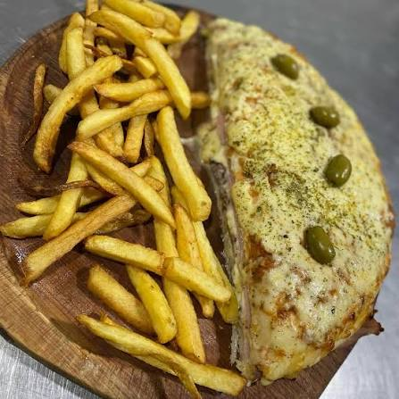

Pizzalomo con papas fritas

Ingredientes
- Pan para lomito
- Carne de lomo
- Jamón cocido
- Queso
- Tomate
- Lechuga
- Huevo
- Mayonesa
- Salsa de tomate
- Orégano
- Papas
- Aceite para freír
- Sal
Instrucciones
-
Pelar y cortar las papas en bastones. Freírlas con cuidado en
aceite caliente hasta que estén doradas y crocantes.
-
Condimentar los bifes de lomo con sal y pimienta. Cocinarlos en una
plancha caliente, lentamente, hasta que estén bien cocidos.
-
Colocar salsa de tomate sobre el pan y agregar el lomo, el jamón y el
queso.
- Agregar tomate, lechuga y huevo, y condimentar a gusto.
-
Llevar el pizzalomo al horno unos minutos, hasta que dore el
pan y se derrita el queso.
- Servir inmediatamente acompañado de las papas fritas.